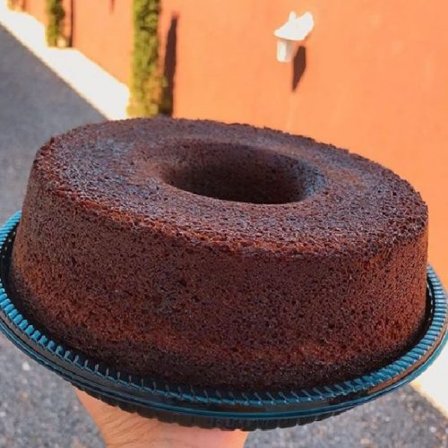

RECEITA DE BOLO DE CHOCOLATE

INGREDIENTES:
-
MASSA
- 4 OVOS
- 4 COLHERES DE CHOCOLATE EM PÓ
- 3 XÍCARAS DE FARINHA DE TRIGO
- 2 COLHERES DE MANTEIGA
- 2 XÍCARAS DE AÇUCAR
- 1 XÍCARA DE LEITE
- 2 COLHERES DE FERMENTO
-
CALDA
- 2 COLHERES DE MANTEIGA
- 7 COLHERES DE CHOCOLATE EM PÓ
- 2 LATAS DE CREME DE LEITE
- 3 COLHERES DE AÇUCAR
MODO DE PREPARO:
-
MASSA
- Em um liquidificador adicione os ovos, o chocolate em pó, a manteiga, a farinha de trigo, o açúcar e o
leite,
depois bata por 5 minutos.
- Adicione o fermento e misture com uma espátlia delicadamente.
- Em uma forma untada, despeje a massa e asse em forno médio (180 ºC) preaquecido por cerca de 40 minutos.
Não
se esqueça de usar uma forma alta para essa receita: como leva duas colheres de fermento, ela cresce
bastante! Outra solução pode ser colocar apenas uma colher de fermento e manter a sua receita em uma
forma
pequena.
- Acrescente o creme de leite e misture bem até obter uma consistência cremosa.
-
CALDA
- Em uma panela, aqueça a manteiga e misture o chocolate em pó até que esteja homogêneo.
- Desligue o fogo e acrescente o açúcar.
Voltar para principal